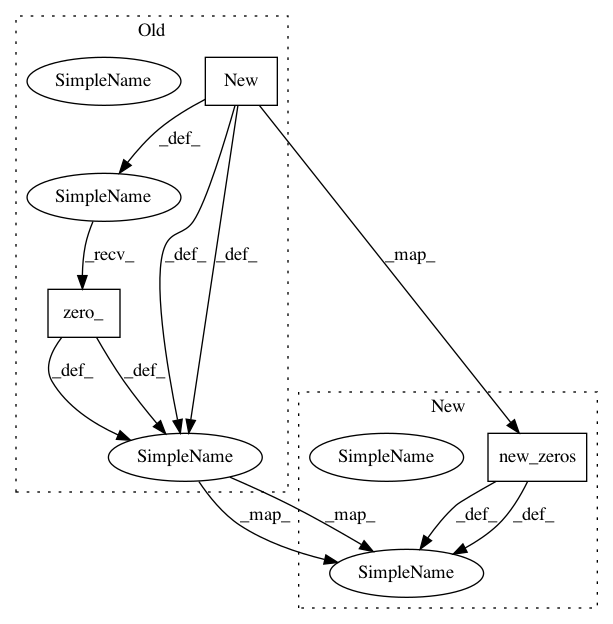

ca776ef5de4dae63c328235379f261a05dc47748,sru/cuda_functional.py,SRU_Compute_GPU,backward,#SRU_Compute_GPU#,97
Before Change
//grad_wc = x.new(2*bidir*d).zero_()
//grad_bias = x.new(2*bidir*d).zero_()
grad_wc = x.new(2, batch, bidir*d).zero_()
grad_bias = x.new(2, batch, bidir*d).zero_()
grad_init = x.new(batch, d*bidir)
grad_x = x.new(*x.size()).zero_() if skip_type > 0 and k_ == 3 else None
if skip_type > 0 and k_ == 3:
After Change
//grad_wc = x.new(2*bidir*d).zero_()
//grad_bias = x.new(2*bidir*d).zero_()
grad_wc = x.new_zeros(2, batch, bidir*d)
grad_bias = x.new_zeros(2, batch, bidir*d)
grad_init = x.new_zeros(batch, d*bidir)
grad_x = x.new_zeros(*x.size()) if skip_type > 0 and k_ == 3 else None
if skip_type > 0 and k_ == 3:
In pattern: SUPERPATTERN
Frequency: 10
Non-data size: 3
Instances
Project Name: asappresearch/sru
Commit Name: ca776ef5de4dae63c328235379f261a05dc47748
Time: 2019-08-25
Author: taolei@csail.mit.edu
File Name: sru/cuda_functional.py
Class Name: SRU_Compute_GPU
Method Name: backward
Project Name: asappresearch/sru
Commit Name: 8fbb49394be00348f17ecea19dc10e36723ca740
Time: 2019-10-22
Author: taolei@csail.mit.edu
File Name: sru/cuda_functional.py
Class Name: SRU_Compute_GPU
Method Name: backward
Project Name: asappresearch/sru
Commit Name: cece98b06174893b6f793454da2ddd172979239e
Time: 2020-01-29
Author: taolei@csail.mit.edu
File Name: sru/sru_functional.py
Class Name: SRUCell
Method Name: forward
Project Name: asappresearch/sru
Commit Name: ca776ef5de4dae63c328235379f261a05dc47748
Time: 2019-08-25
Author: taolei@csail.mit.edu
File Name: sru/cuda_functional.py
Class Name: SRU_Compute_GPU
Method Name: forward